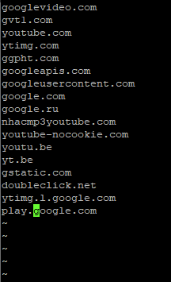

Товарищи, снова вынужден обратиться к вам за помощью 
Byedpi поднят на шлюзе OpenWRT, все ресурсы работают корректно, кроме ютуба. С ним я намучался уже.
Локально на Windows у меня работает следующая стратегия, сгенерированная B-checker:
--hosts "BlackLists\Youtube.txt" --split 1 --disorder 2+s --auto=n --hosts "BlackLists\GGC.txt" --split 1 --disorder 2+s --auto=n --tlsrec 3+s --fake -5 --auto=t,r,s,n --timeout 1 --oob 3+s
объединил оба списка в один, разместил исполняемый файл и список в /root шлюза для теста, запускаю в режиме transparent proxy:
./ciadpi-armv7l -E -p 1102 --debug 2 --hosts /root/GGC.txt --split 1 --disorder 2+s --auto=n --tlsrec 3+s --fake -5 --auto=t,r,s,n --timeout 1 --oob 3+s 2
Для теста на 1102 пересылаю вообще весь трафик с моего хоста. Kyber и QUIC/HTTP3 в браузере отключены на всякий случай.
Сайт ютуба с задержками, но открывается, само видео не грузится от слова совсем 
- В браузере колечко вертится,
- в консоли разработчика нулевые ответы от GGC (скриншот приложен)
- в debug 2 пролетают recv: Operation timed out (прикрепил небольшой кусок дебаг-лога)
Буду крайне благодарен за помощь и идеи
yt-log.txt (12.0 KB)
{kind=link}
А если запустить Byedpi (или аналог) не на openwrt, а на винде, ютуб будет работать? Если да, к каким GGC обращается браузер? (сохраните адреса)
Идеи:
- Ваша стратегия подходит для заблокированных сайтов, но не подходит для GGC, и надо искать другую
- Часть или все GGC заблокированы наглухо
Работает, в том то и дело.
Вот проверил сейчас еще раз.
Указываю на ПК шлюз без byedpi, запускаю локально на винде
ciadpi.exe --ip 127.0.0.1 --port 18083 --debug 2 --hosts "BlackLists\Youtube.txt" --split 1 --disorder 2+s --auto=n --hosts "BlackLists\GGC.txt" --split 1 --disorder 2+s --auto=n --tlsrec 3+s --fake -5 --auto=t,r,s,n --timeout 1 --oob 3+s
включаю в FF SmartProxy…
…и все работает. Обращения идут к https://rr8---sn-n8v7znsk.googlevideo.com
{kind=link}
Отключаю SmartProxy, устанавливаю шлюзом OpenWRT с ByeDPI. Ntc.party, facebook и прочие ресурсы доступны, то есть сам по себе прозрачный прокси работает корректно.
Устанавливаю проксирование всего трафика и запускаю
./ciadpi-armv7l -E -p 1102 --debug 2 --hosts /root/GGC.txt --split 1 --disorder 2+s --auto=n --tlsrec 3+s --fake -5 --auto=t,r,s,n --timeout 1 --oob 3+s 2
(в GGC.txt тот же набор доменов что и в 2 списках использованных выше)
Ну и все, алес…
{kind=link}
Локально работает не только rr8, так что я крайне сомневаюсь, что тут совпадение в доступности одних GGC и недоступности других
На самом деле архитектурно я могу запускать весь трафик кроме ютуба на byedpi, а ютуб на какую-то другую прозрачную прокси на другом порту, так что можно обход ютуба другим решением, поддерживающим работу как transparent proxy, реализовать. Но чем?
Обход для play.google.com тоже работает на винде, но не работает на openwrt?
А если запустить ByeDPI на OpenWRT в режиме обычного прокси, а не прозрачного, и навести на него SmartProxy, будет работать?
UPD: этот сообщение можно игнорировать, тут был мой косяк, ниже корректное поведение привел
Хорошая мысль, как SOCKS я не потестил.
Запустил сейчас
./ciadpi-armv7l -p 1102 --debug 2 --hosts /root/GGC.txt --split 1 --disorder 2+s --auto=n --tlsrec 3+s --fake -5 --auto=t,r,s,n --timeout 1 --oob 3+s 2
И “натравил” SmartProxy напрямую на него через SOCKS5, режим полного проксирования.
В итоге ничего не вышло, пустой экран, ошибки CORS
{kind=link}
Виноват, мой косяк, я не переключил шлюз с byedpi на обычный.
В итоге повальных ошибок CORS нет, но та же самая история, что и раньше
{kind=link}
Хотя вот на play.google.com ругается
Проверил, при запуске локально на винде play.google.com открывается. Через прокси в сети - нет.
Значит, byedpi для винды и для arm работает по разному, другого объяснения у меня нет. Списки доменов точно одинаковые? Кстати про списки: в файле GGC.txt на винде и на openwrt окончания строк виндовые (CR LF) или линуксовые (LF)? Линуксовое ПО не всегда корректно обрабатывает виндовые окончания строк. Проверить можно notepad++ или любым hex редактором.
Я рекомендую попробовать zapret вместо byedpi, он так же есть под винду и openwrt, в комплекте скрипт для подбора конфига. Если не найдёте, могу прислать ссылки.
CORS Failed - возможно проблема firefox, попробуйте chrome или другой браузер.
Вот содержимое текстового файла, открыт через vi. При переносе с винды был косяк с окончанием строк, это сразу поправил

Эх, может и попробовать опять zapret. Как и писал ранее, он у меня не завелся. Грешил, что у меня малина с одним интерфейсом и у меня отсутствует зона WAN и это ломает внутреннюю логику zapret (в конфиге вместо wan прописал lan).
У меня zapret заводился с одним интерфейсом на armbian, но там был iptables. Можно добавить в br-lan виртуальный интерфейс, назначить ему другой IP и использовать как lan, а существующий интерфейс со шлюзом как wan. Либо вручную модифицировать правила в nftables.
У вас включен masquerading для lan (который wan) интерфейса? Возможно дело в этом.
Ничерта опять не работает) Возможно, что дело в этом
Вот еще ValdikSS писал
Ну ладно, это не по byedpi, оффтоп 
Некоторые функции byedpi работают по-разному на винде и linux
byedpi написан на socket api и эксплуатирует некоторые документированные и недокументированные особенности того или иного ядра. С фейками на винде будут проблемы как я понимаю